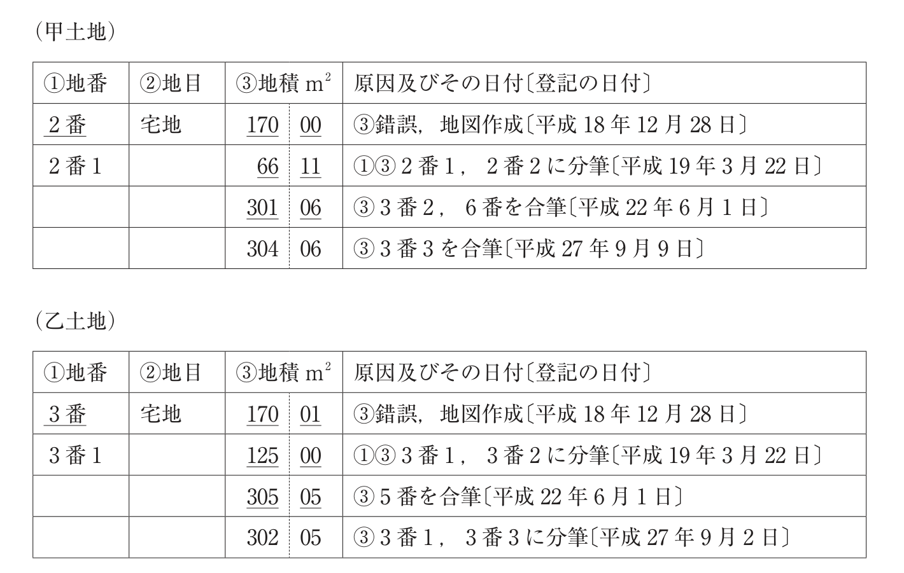

問題文・条件
令和元年10月18日現在において次のような登記事項の記録（抜粋）がある甲土地及び乙土地に関する。なお、甲土地及び乙土地は、いずれも、不動産登記規則第10条第2項第1号の市街地地域に属し、その地番区域及び所有権の登記名義人が同一であり、また、乙区に記録されている事項はないものとする。
肢 ア
R1-19-ア
令和元年10月18日の時点において、甲土地の範囲には、平成22年6月1日の合筆の登記による登記記録の閉鎖時における6番の土地に相当する部分の全部が必ず含まれる。

〔図〕
解答：○
合筆後に分筆がなければ、合筆した土地はそのまま含まれる。
甲土地（2番1）は平成22年6月1日に3番2と6番を合筆し、その後は合筆しかしていない。合筆で取り込んだ6番の部分は分筆で切り出されていないから、今も甲土地に含まれる。
出典：法務省 令和1年度 土地家屋調査士試験を加工して作成
肢 イ
R1-19-イ
令和元年10月18日の時点において、乙土地の範囲には、平成22年6月1日の合筆の登記による登記記録の閉鎖時における5番の土地に相当する部分の全部が必ず含まれる。
〔図〕
解答：×
合筆後に分筆しているので、5番の部分が全部残っているとは限らない。
乙土地（3番1）は平成22年に5番を合筆したが、平成27年9月2日に3番1と3番3に分筆している。5番に当たる部分が3番3の側に入っていれば乙土地には残らないから、必ず含まれるとは言えない。
出典：法務省 令和1年度 土地家屋調査士試験を加工して作成
肢 ウ
R1-19-ウ
3番3の土地について、平成27年9月2日の分筆の登記による登記記録の作成時から平成27年9月9日に甲土地に合筆する合筆の登記がされるまでの間に分筆の登記及び合筆の登記がされていないときは、令和元年10月18日の時点において、甲土地と乙土地は隣接している。
〔図〕
解答：○
乙土地から分かれた3番3が甲土地に合筆されたので、両者は接する。
3番3は平成27年9月2日に乙土地（3番1）から分筆された土地で、乙土地と接している。それが同月9日に甲土地に合筆されたので、甲土地は3番3の部分で乙土地と接する。合筆は互いに接する土地の間でしかできないことからも裏づけられる。
根拠法41条1号
出典：法務省 令和1年度 土地家屋調査士試験を加工して作成
肢 エ
R1-19-エ
2番2の土地について、平成19年3月22日の分筆の登記による登記記録の作成時から令和元年10月18日までの間に分筆の登記及び合筆の登記がされていないときは、平成19年3月22日の分筆の登記によって創設された甲土地と2番2の土地の筆界は、令和元年10月18日の時点において存在している。
〔図〕
解答：○
分筆で創設された筆界は、合筆されない限り残る。
筆界は、一筆の土地が登記された時にその境を構成するものとされた点と直線（法123条1号）。平成19年に2番を2番1と2番2に分筆したときに、両者の間の筆界が生じた。2番2にその後分筆も合筆もなければ、その筆界は残っている。
根拠法123条1号
出典：法務省 令和1年度 土地家屋調査士試験を加工して作成
肢 オ
R1-19-オ
3番2の土地について、その登記記録の作成時から平成22年6月1日に甲土地に合筆する合筆の登記がされるまでの間に合筆の登記がされていないときは、平成22年6月1日の合筆の登記による登記記録の閉鎖時における5番の土地の登記記録上の地積は、平成22年6月1日の合筆の登記による登記記録の閉鎖時における6番の土地の登記記録上の地積よりも大きい。
〔図〕
解答：×
地積の差を計算すると、5番は180.05、6番は190ほど。6番のほうが大きい。
3番2は3番（170.01）から3番1（125.00）を分けた残りで45.01。甲土地は合筆で66.11から301.06になったので、3番2と6番で234.95増え、6番は189.94。乙土地は125.00から305.05になったので5番は180.05。6番のほうが5番より大きい。
出典：法務省 令和1年度 土地家屋調査士試験を加工して作成